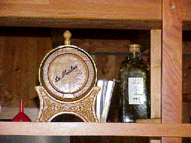
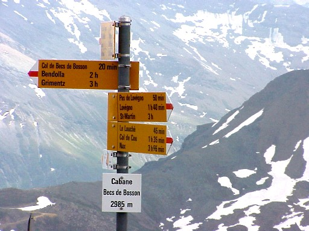

|
|||||||||
|
|||||||||
|
Routes:
1.Eison 2.Grimentz
3.Nax ROUTE 1 VANAF EISON Vertrekpunt: ROUTE 2 VANAF GRIMENTZ Vanuit de Val d’Anniviers kan je eveneens de cabane des Becs de Bosson bereiken. Een aanrader is beide valleien te combineren: je vertrekt via l’A vieille (Val d’Hérens), middageten in Cabane des Becs de Bosson en nadien via Lona naar Grimentz. Je moet wel een oplossing zoeken om dan terug naar de Val d’Hérens te raken natuurlijk! De wegbeschrijving naar Cabane des BdB vanuit Grimentz: Je verlaat het stadje zuidwaarts richting kabelbaan Bendolla. Ofwel neem je de lift naar omhoog of je gaat te voet. In beide gevallen vertrekt boven aan het bergstation van de kabelbaan (om en bij de 2120 m) een aangeduid goed wandelpad naar LONA. (Op je kaart merk je dat er nog een lift is die aan Bendolla vertrekt en hogerop gaat… niet te vlug likkebaarden: de skilift werkt niét in de zomer!) Te voet naar Lona dus via een weg waar het uitzicht over de Val d’Anniviers (met Grimentz, Ayer tot Saint Luc) knap is en nadien krijg je dan de Val de Moiry (goed zicht op de Sorebois). Stijgingsgraad is klein (Wanneer je de oversteek maakt over het bruggetje onder de Pointe de Lona zit je op ongeveer 2600 m). Aan de andere kant kijk je uit op het lac de Lona aan je linkerhand, recht voor jou zie je de Pas de Lona (waar je inderdaad naar toe trekt), rechts zie je in de verte de cabane des BdB al staan. Vanaf de Pas de Lona volg je het pad naar de cabane. Een eerste aanrader: Op het laatste stuk naar de cabane, rechts van het pad: een zee van edelweissjes… velen lopen hier voorbij zonder ze te zien! Waarschijnlijk omdat ze meer naar boven kijken dan naar de grond. Tweede aanrader IN de cabane: vraag naar een ‘Malice’. Je merkt wel wat het is, tenzij je geheelonthouder bent.  Derde aanrader: parkeerplaats wanneer je uit de Val d’Hérens vertrekt: wanneer je richting Tsalet d’Eison rijdt (vreselijk slechte baan), vind je net voor een riviertje op je rechterkant een parkeerplaats. Je vervolgt nadien te voet je weg en ziet tamelijk vlug een wegwijzer richting A Vieille / Lona. Nog een mogelijkheid (lang, maar zeer afwisselend) om de cabane te naderen via een andere weg: vanuit Nax naar Col de Cou, verder naar de pas de Lovegno, naar l’A Vieille en dan aansluiten op het pad vanuit Eison.  Laatste ideetje: volgens de cabanier (in 2001) werd ook volgende toegangsweg gepland: vanaf de Roc d’Orzival (dan krijg je bvb een mooie lange wandeling vanaf Nax – Col de Cou – eventueel even afwijken om Mont Noble aan te doen - l’Ar du Tsan – Col du Tsan – onder de Becs naar de cabane); (Ingezonden door Eddy Van Mossevelde)
|
||